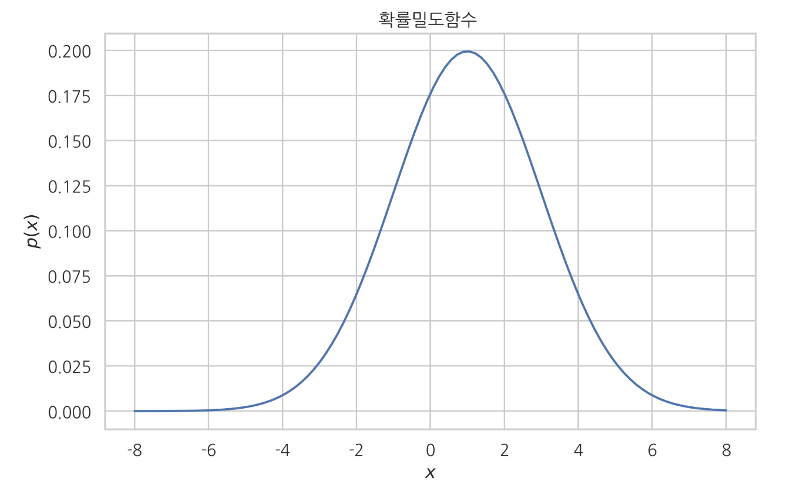
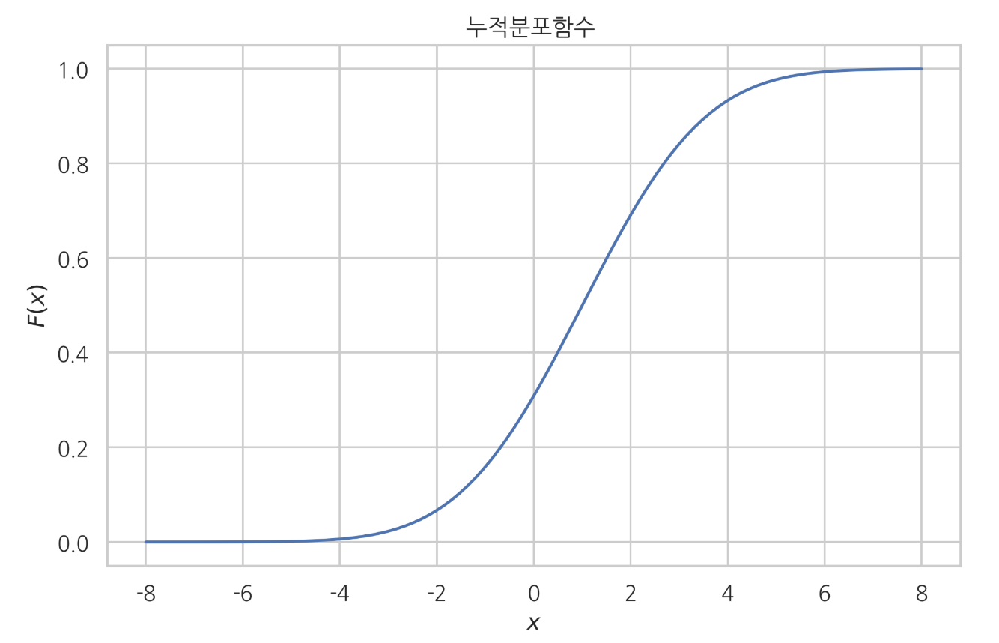

SciPy를 이용한 확률분포 분석
확률분포 클래스
확률분포 클래스 객체를 생성한 후에 이 객체의 메서드를 호출해야한다.
| 종류 | 이름 | 확률분포 |
|---|---|---|
| 이산 | bernoulli |
베르누이 분포 |
| 이산 | binom |
이항 분포 |
| 이산 | multinomial |
다항 분포 |
| 연속 | uniform |
균일 분포 |
| 연속 | norm |
가우시안 정규 분포 |
| 연속 | beta |
베타 분포 |
| 연속 | gamma |
감마 분포 |
| 연속 | t |
스튜던트 t 분포 |
| 연속 | chi2 |
카이 제곱 분포 |
| 연속 | f |
F 분포 |
| 연속 | dirichlet |
디리클리 분포 |
| 연속 | multivariate_normal |
다변수 가우시안 정규 분포 |
import scipy as sp
import scipy.stats
# 가우시안 정규분포
rv = sp.stats.norm()
모수 지정
확률분포 객체를 생성할 때는 분포의 형상을 구체적으로 지정하는 모수(parameter) 를 인수로 지정해 주어야 한다. (Scipy 문서 참조)
| 인수 | 의미 |
|---|---|
loc |
일반적으로 분포의 기댓값 |
scale |
일반적으로 분포의 표준편차 |
# 기댓값=1, 표준편차=2 인 정규 분포 객체
rv = sp.state.norm(loc=1, scale=2)
확률분포 메서드
| 메서드 | 기능 |
|---|---|
pmf |
확률질량함수 (probability mass function) |
pdf |
확률밀도함수 (probability density function) |
cdf |
누적분포함수 (cumulative distribution function) |
ppf |
누적분포함수의 역함수 (inverse cumulative distribution function) |
sf |
생존함수 (1 - 누적분포함수) (survival function) |
isf |
생존함수의 역함수 (inverse survival function) |
rvs |
랜덤 표본 생성 (random variable sampling) |
확률밀도함수 메서드 사용법
xx = np.linspace(-8, 8, 100)
pdf = rv.pdf(xx)
plt.plot(xx, pdf)
plt.title("확률밀도함수")
plt.xlabel("{% math %}x{% endmath %}")
plt.ylabel("{% math %}p(x){% endmath %}")
plt.show()

누적분포함수 메서드 사용법
xx = np.linspace(-8, 8, 100)
cdf = rv.cdf(xx)
plt.plot(xx, cdf)
plt.title("누적분포함수 ")
plt.xlabel("{% math %}x{% endmath %}")
plt.ylabel("{% math %}F(x){% endmath %}")
plt.show()

무작위 표본 생성
rvs (random value sampling) 메소드를 사용
| 인수 | 의미 |
|---|---|
size |
표본 생성시 생성될 표본의 크기 |
random_state |
표본 생성시 사용되는 시드(seed)값 |
rv.rvs(size=(3, 5), random_state=0)
새로운 확률변수의 시뮬레이션
시뮬레이션 기능을 사용하면 확률변수의 표본을 가공하여 만들어진 새로운 확률변수의 확률분포도를 알 수 있다.